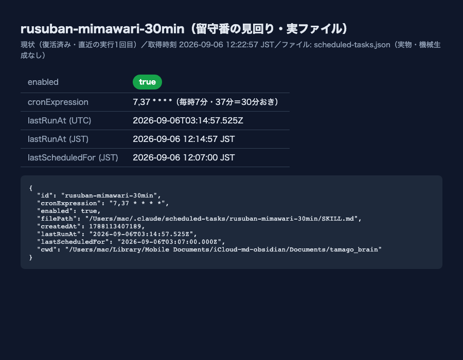
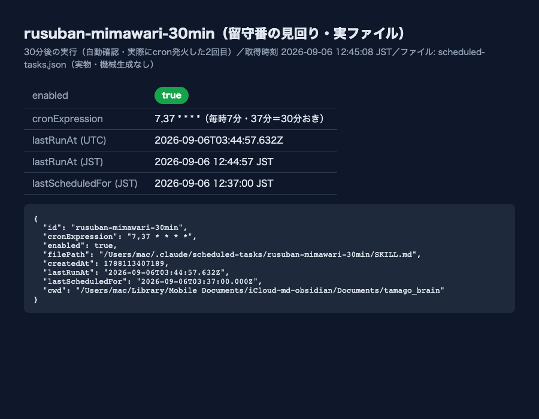

rusuban-mimawari-30min）を止める」を実行したが、これはたまごさんの意図と逆だった。たまごさんの言葉：「留守番の見回り、やめない。30分に1回やってくれ」。2026-09-04の停止判断を取り消し、30分おきの見回りを元に戻した。
scheduled-tasks.json）で rusuban-mimawari-30min の enabled を false → true に戻した。②同タスクの実体 SKILL.md 冒頭に入っていた「停止ブロック」（起動しても即終了する仕掛け）を撤去し、本体の見回り手順（生存確認・停滞の再起動・24時間放置の畳み・空き枠への着火）を通常どおり実行できる状態に戻した。③Vaultの2つの台帳（定期タスク_停止台帳.md・定期実行台帳.md）に「取り消した」旨を追記した。
~/.claude/scheduled-tasks/rusuban-mimawari-30min/SKILL.mdscheduled-tasks.json）の実物をそのまま撮影したもの。加工・手打ちの数値は無い。

enabled: true・直近の自動実行 lastRunAt 2026-09-06T03:14:57Z（JST 12:14:57）を確認
lastRunAtが更新されたことを確認したスクリーンショット（このセッション内で実際に1サイクル分の自動実行を観測）~/Library/Application Support/Claude/claude-code-sessions/81e8a1ee-1a56-4d8f-a2d2-fb45f5e7e0d1/67542e85-a104-4946-bcde-7c7916354942/scheduled-tasks.json